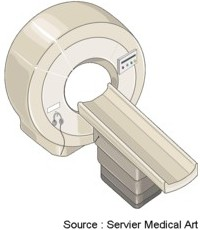

L'imagerie par resonance magnetique : IRM
Definition
L'imagerie
par resonance magnetique ou IRM est une technique d'imagerie qui est
basee sur la resonance magnetique des atomes d'hydrogenes contenus dans
l'eau des cellules de l'organisme sous l'action de certaines ondes de
radio frequence.
Elle
permet l'examen des differents organes en coupes dans trois plans.
L'examen
peut necessite parfois l'injection d'un produit de contraste, le
gadolinium (substance paramagnetique).

Les
types d'IRM
IRM
abdomino-pelvien
Principe
- Permet de visualiser les structures
pelviennes (uterus, ovaires, vessie prostate, tube digestif, ligaments,
muscles et ganglions) et les elements vasculaires (arteres et veines).
Objectifs
- Preciser un diagnostic, apres une
echographie et un scanner.
- Evaluer l'extension des tumeurs
pelviennes (rectum, uterus, ovaire, prostate …).
- Surveillance apres un traitement
chirurgical ou par radiotherapie.
IRM
cardiaque
Principe
- Permet de visualiser les
structures cardiaques (myocarde, pericarde, …) et les gros vaisseaux
(aorte, veine cave, arteres et veines pulmonaires).
Objectifs
- Faire un bilan precis des insuffisances
cardiaques (apres une radiographie conventionnelle et une echographie)
et des cardiopathies congenitales, des pericardites, des tumeurs
cardiaques,…
- Bilan de reference avant une
intervention chirurgicale de certaines maladies du cœur.
IRM
cerebrale
Principe
- Permet de visualiser les deux parties du
cerveau, superficielle et profonde, ainsi que les cavites
intra-cerebrales avec leur contenu (liquide cephalo-rachidien), et la
vascularisation veineuse et arterielle du cerveau.
Objectifs
- Rechercher la localisation et la nature
des anomalies du cerveau ou de ses vaisseaux, a l'origine de symptemes
neurologiques permanents ou transitoires.
- Explorer une anomalie detectee au
scanner cerebral.
IRM
de la thyroede
Principe
- Permet de visualiser la glande
thyroedienne.
Objectif
- Etudier la thyroede devant l'existence
d'anomalies biologiques ou hormonales faisant suspecter un
dysfonctionnement thyroedien.
IRM
du rachis
Principe
- Permet de visualiser les structures
vertebrales et paravertebrales rachidiennes (vertebre, disque
intervertebral, ligaments, muscles) et les elements du systeme nerveux
qu'elles contiennent (moelle epiniere et racines nerveuses).
Objectif
- Rechercher des anomalies de la moelle et
des vertebres devant des signes neurologiques particulierement
evocateurs.
IRM
hepatique
Principe
- Permet de visualiser l'anatomie et la
vascularisation du foie.
Objectif
- Preciser la nature de certaines
anomalies du foie, detectees a l'echographie ou au scanner.
IRM
hypophysaire
Principe
- Permet de visualiser l'hypophyse.
Objectif
- Etudier l'hypophyse devant l'existence
d'anomalies biologiques ou hormonales faisant suspecter un
dysfonctionnement de l'hypophyse, le plus souvent a la presence d'un
adenome.
IRM
mammaire
Principe
- Permet de visualiser les glandes
mammaires.
Objectif
- Completer et preciser l'exploration de
certaines anomalies du sein detectees a la mammographie. Ce n'est pas
un examen de depistage.
La
preparation a l'examen
- Oter tout objet metallique : bouton,
barrettes de cheveux, bijoux, piereings, montre, clefs, cartes a bande
magnetique, telephone portable.
- Information du patient :
- Duree de l'examen : 45 minutes.
- Examen impressionnant :
- Lit se deplaeant dans un arceau.
Attention si patient claustrophobe, prevoir une premedication.
- Inconfort lie a la necessite de rester
parfaitement immobile en position allongee sur le dos.
- Bruyant.
- Communication avec les soignants par des
micros.
- Examen non douloureux, mais sensation de
chaleur lors de l'injection du produit de contraste.